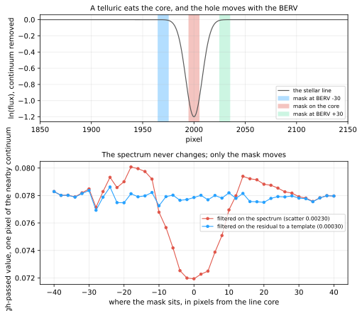
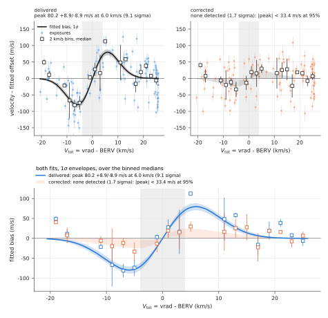

What it is, and how the pieces fit
One command reads a campaign of spectra, builds a cube, fits it, and
writes corrected files that any velocity code can read. The whole
chain is five stages (cube, fit,
correct, figures, lbl), and
each one can be run alone.
The idea is simple enough to state in one line: over a campaign, the same wavelength sample is seen at many different barycentric velocities. Anything that keeps its place in the observer's frame while the star slides past it is not the star. Give the fit one block of components that sits still in the star's frame and another that sits still in the Earth's, and the two separate themselves.
The demonstration target throughout this page is TOI-2120, an M dwarf observed with SPIRou: 321 exposures, a wide BERV span, and deep water bands crossing the stellar lines.
The idea, step by step

What a corrected file holds

The model behind it
Let \(y(\lambda, t)\) be the high-passed log flux of the exposure taken at time \(t\), sampled on a common log-wavelength grid. The model writes it as the sum of two blocks, one anchored in each frame:
- \(\bar{S}\) is the star's mean spectrum. It carries no free amplitude: it enters with a coefficient of exactly one, so the fit can never scale the star away to explain something else.
- \(P_i\) are the stellar variability components, \(Q_j\) the Earth components. Both are found by a weighted PCA on the cube itself, not assumed from a model atmosphere.
- \(a_i(t)\) and \(b_j(t)\) are the only free parameters, solved one exposure at a time.
- \(\mathcal{D}_t\) is the Doppler factor that carries the star's frame into the observer's for that exposure.
The Doppler factor is always the relativistic one, never the first-order approximation:
On a log-wavelength grid this is a pure translation by \(\operatorname{artanh}(v_t/c)\) divided by the grid step, which is why the grid is logarithmic in the first place. At a 30 km/s BERV the first-order form is off by \(\tfrac{1}{2}(v/c)^2 \approx\) 1.5 m/s, which is the whole scale of the measurement.
The full derivation, the weights, and how the two bases are built →
What the coefficients do in time

And where there is little to remove

And what they follow

The high pass, and why it is taken against a template
Before any of this, the continuum and the blaze have to go. A Savitzky-Golay filter does that, but a filter run over a whole spectrum is dragged downward by every deep line, so the smooth curve it returns is not the continuum, it is the continuum minus a fraction of the line.
That bias would be harmless if it were the same every night. It is not. When a telluric line sweeps across the core of a stellar line with the BERV, the pixels it saturates are blanked, and the hole moves. The filter then decrouches differently from one exposure to the next, and leaves behind a residual that tracks the BERV without being stellar.

Measured on HD 69830 at 688.85 nm, and on a synthetic line whose spectrum is held fixed while only the ten-pixel mask moves. Since 2026-10-16 the high pass is therefore taken on the residual to a median template, built in the star's frame and brought back to each exposure's own frame. No line is masked, and nothing enters or leaves the mask as the BERV changes.
Why the two forms are not algebraically the same, and what the change bought →
What it is worth, measured
On TOI-2120 (321 SPIRou exposures, a 37.9 km/s barycentric span, deep water bands across the stellar lines) the velocity scatter drops by a factor of 3.4 on the 80 epochs the two series share:
That is the favourable case. The harder test is the optical, where the
tellurics have already been cleaned once: three HARPS campaigns, each
measured three ways on the same exposures and in a single instrument
mode. rms is the plain dispersion, MAD the
robust one; they differ when a correction straightens the tails while
leaving the core alone.
| Star | Pipeline | rms (m/s) | MAD (m/s) | Error bar |
|---|---|---|---|---|
| HD 10700 G8V, 86 epochs |
ESO DRS, CCF | 2.16 | 1.69 | 0.34 |
| LBL, telluric-cleaned | 2.19 | 1.75 | 0.38 | |
| + pca2d-preclean | 2.07 | 1.57 | 0.49 | |
| HD 69830 K0V, 150 epochs |
ESO DRS, CCF | 3.71 | 3.57 | 0.34 |
| LBL, telluric-cleaned | 3.73 | 3.49 | 0.36 | |
| + pca2d-preclean | 3.50 | 3.29 | 0.50 | |
| GJ 581 M3V, 116 epochs |
ESO DRS, CCF | 9.83 | 11.68 | 1.37 |
| LBL, telluric-cleaned | 9.62 | 12.06 | 0.84 | |
| + pca2d-preclean | 9.06 | 10.76 | 0.91 |
GJ 581's CCF row excludes three exposures where the DRS fails outright, returning −591 to −655 m/s where LBL finds −3 to +12; with them the CCF rms is 97.8 m/s. pca2d-preclean is the only one of the three to beat the CCF on all three stars, and the gain is in the tails: it straightens the worst exposures more than it improves the median one.
The full results, the component diagnostics, and the cases where it makes things worse →
Velocities, before and after

A bias that follows the BERV

Five spectrographs, one pipeline
The reader is picked from INSTRUME in the files
themselves, never chosen by hand, and each spectrograph's settings live
in one block of config.yaml.
The optical spectrographs need one step the infrared ones do not: their spectra arrive with the tellurics still in them, so LBL's telluric cleaning runs first and pca2d fits the residuals of that cleaning. In the infrared, APERO has already done it.
How that cleaning is done, and the two things that had to change in it →
One trap worth stating: on HARPS the delivered wavelength grid is
already barycentric, so the instrument's own BERV reads zero. Left
alone, the two frames of the fit would collapse into one and the
correction would make things worse: it took the rms from 11.2 to
51.6 m/s before this was caught. input.to_observer undoes
the barycentric correction on the way in so that the two frames stay
distinct.
Install it
A virtual environment keeps this separate from whatever Python the rest of your work uses, which matters because the fit pins fairly specific numpy and scipy versions.
LBL is optional. Without it everything up to the corrected files still
runs; with it, --stages lbl measures the velocities of both
the delivered and the corrected spectra and writes the report.
Run it
--n-star and --n-earth are how many components
each block gets. Everything else (the domain, the windows, the weights) comes from config.yaml, and the resolved
settings are written beside the outputs so a run can always be read back.
What comes out
A run leaves a folder named for the object and the component counts. Inside: the corrected spectra on their original grids, the fitted components, a CSV of every coefficient, and a PDF report of around thirty pages: the river plots above, the coefficients in time, the correlations, and, when LBL ran, the velocities and their periodograms.
LBL itself now writes a second report per run, in
<DATA_DIR>/reports: a summary table with the code
version it used, the velocity series, the velocities coloured by BERV,
the periodogram beside the spectral window, the false inclusion
probability both plain and outlier-aware, and the telluric correction on
the best, median and worst exposure of the campaign.